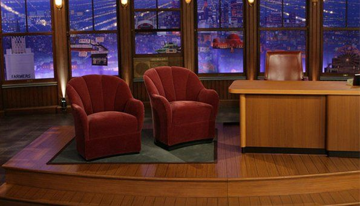
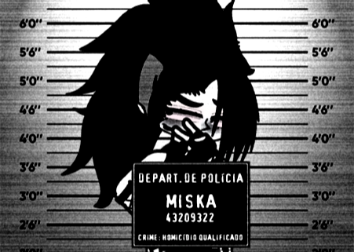
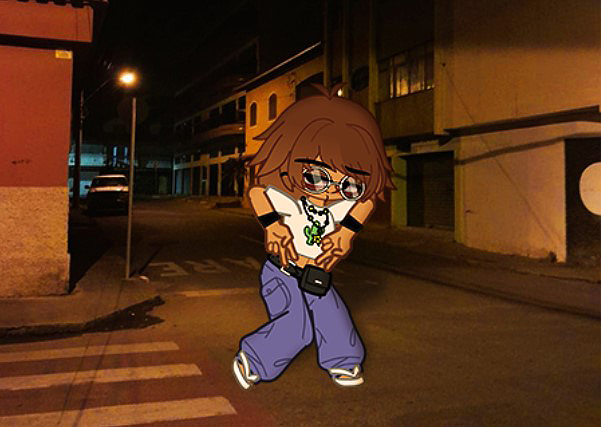
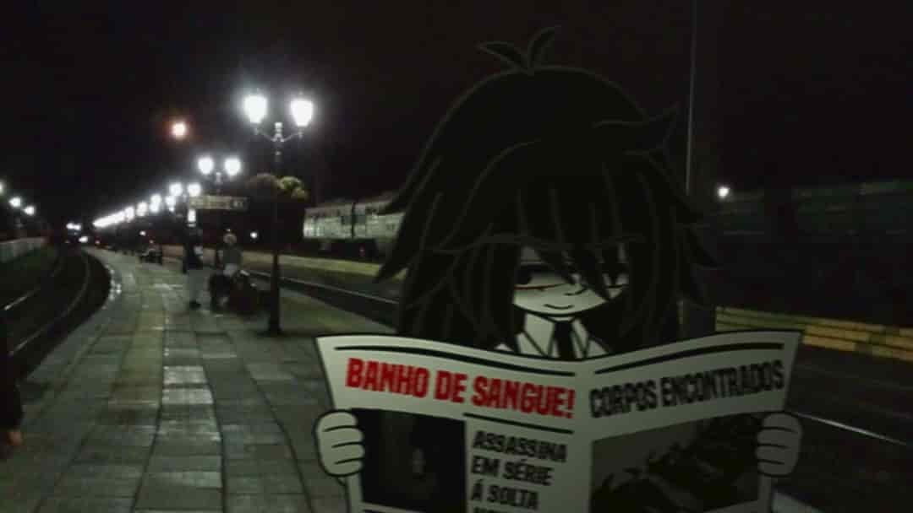
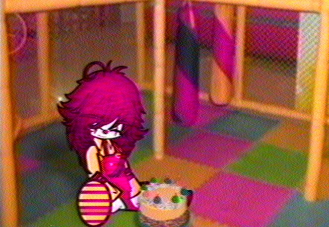

As Várias Faces De Mim
Cara, é um desafio danado iniciar isso aqui sem parecer uma palhaça. Quase consigo sentir a gargalhada da galera, a zoeira sem fim e aquele julgamento silencioso de "alguém avisa, por favor!". E o que mais me intriga é essa minha dificuldade em ignorar tudo isso. Depois do tanto de tranco que já levei da vida, era de se esperar que eu fosse imune a essas coisas.
Mas nããããão, né? Claro que não.
Parece que a vida fez um pacto eterno pra me testar. Justo quando penso que tudo vai se ajeitar, ela manda um “segura meu café” lá de cima e pronto, lá vem mais merda rolando montanha abaixo.
Mas tá, tá, eu sei. Você deve estar aí se perguntando: “Ok, qual é o caos da vez?”. Relaxa, já te conto.
Eu tô num estúdio.
“Ah, mas estúdio de quê?”
Apenas imagina aqueles talkshows em que o apresentador e o convidado conversam sobre qualquer bobagem que surgir com um roteiro escrito por um chimpanzé hiperativo. É basicamente isso. E pra completar toda a desgraça, tem uma plateia gigantesca me encarando.

Eu juro que nem sei de onde surgiu tanta gente, e acho que até eles tão tentando entender o que eles estão sequer fazendo aqui.
“Ah, mas como que você foi parar aí?”
Belíssima pergunta.
E vou ser sincera, eu até teria dificuldade pra responder se eu não tivesse olhado em volta e percebido que o meu “time de produção” era composto por ninguém menos que Ash, Ashley, Jeffrey, Kenda, Jellie... e a Laetitia.
Eles riam da minha cara enquanto mexiam nos equipamentos, fazendo pose de técnico profissional, ou pelo menos tentando dar esse ar.
“Haha olha só! Nem sei se isso é um microfone ou não, mas estamos arrumando!”.
Enfim, todos prontos pra transformar meu colapso existencial numa série ruim da Netflix.
Claro que minha reação foi a mais sensata possível numa situação dessas: comecei a berrar um monte de perguntas sem nexo.
“Onde eu tô?”
“De onde brotou essa plateia cheia de sorriso falso?”
“Quem bancou essa droga toda?”
E principalmente, “POR QUE DEMÔNIOS A LAETITIA TAVA AQUI?!”
Foi nesse momento que o auge da estupidez resolveu se manifestar: o Ash, com aquele olhar de quem comeu tinta quando criança, me solta que teve a brilhante ideia depois de assistir muitas séries em quadrinhos sobre versões alternativas de um mesmo personagem.
E, lógico, ele quis “fazer igual”.
Pois é, com certeza um Einstein.
Então é, acho que agora você já tá imaginando o nível, né?
Resumindo pra você: eu realmente vou ter que entrevistar um monte de versões alternativas de mim mesma espalhadas pelo multiverso. E adivinha quem tá encarregada de puxar esses clones pra cá? Exatamente, a Laetitia.
E isso é tudo culpa de quem? Do Ash, que, DE ALGUM JEITO, conseguiu convencer não só o grupo inteiro, como também a porra de uma DEUSA a participar disso.
Resumindo: é o satanás de asa.
VARIANTES ENTREVISTADAS

Versão 1 - "Punk"

Versão 2 - "Mislene"

Versão 3 - "Miskko"

Versão 4 - "Psicopata"

Versão 5 - "Século XIX"

Versão 6 - "Aurora"

Versão 7 - "Inabalável"
Retornar